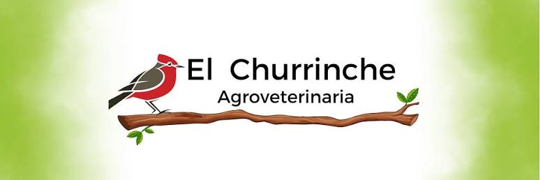

La empresa cliente es llamada “El Churrinche” y se encuentra en 1211 en Gregorio Sanabria. Está formada por sus dos dueñas llamadas Patricia y Valentina las cuáles fueron propietarias de sus propias veterinarias por sí solas. Se ayudaban en cirugías cubriéndose y decidieron que lo mejor para crecer en el futuro era unir sus veterinarias en una, por lo que en 2023 se unió formalmente en una veterinaria sola. Ahora mismo ellas cuentan con cinco funcionarios que brindan toda clase de servicios como servicio de peluquería, cirugías, vacunaciones, venta de raciones, ventas de medicamentos. La veterinaria cuenta con un horario seguido durante los lunes a viernes de 9:00 a 19:00 y los sábados cuenta con un horario de 9:00 a 14:00. Tienen planes a futuro por lo cuál este proyecto funcionará muy bien en esta empresa. La unidad de negocio sería la venta de artículos de veterinaria y cirugías hacia las mascotas.